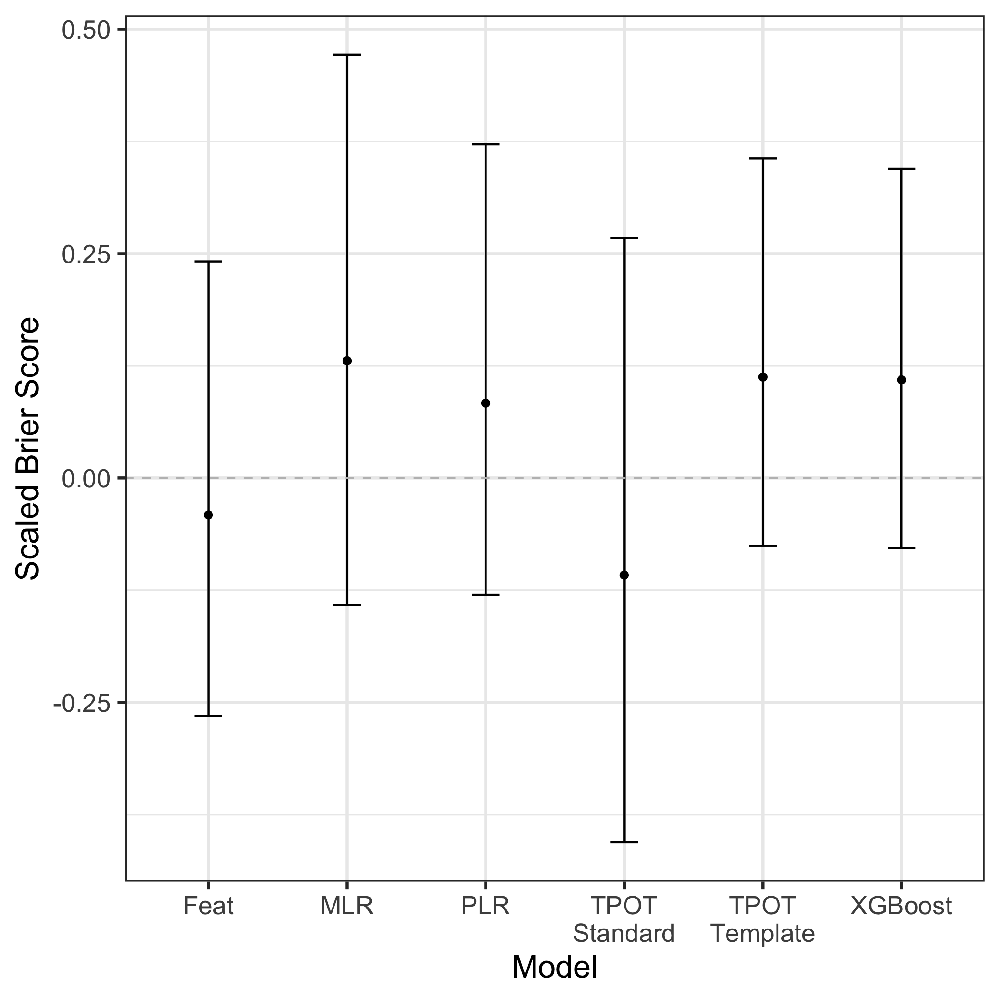

Gary E. Weissman 0000-0001-9588-3819 · gweissman · garyweissman Palliative and Advanced Illness Research (PAIR) Center, Perelman School of Medicine, University of Pennsylvania, Philadelphia, PA 19104; Division of Pulmonary, Allergy, and Critical Care Medicine, Perelman School of Medicine, University of Pennsylvania, Philadelphia, PA 19104 · Funded by Grant XXXXXXXX
Trang T. Le 0000-0003-3737-6565 · trang1618 · trang1618 Department of Biostatistics, Epidemiology and Informatics, Institute for Biomedical Informatics, University of Pennsylvania, Philadelphia, PA 19104
William La Cava 0000-0002-1332-2960 · lacava · w_la_cava Department of Biostatistics, Epidemiology and Informatics, Institute for Biomedical Informatics, University of Pennsylvania, Philadelphia, PA 19104
Marzana Chowdhury
Palliative and Advanced Illness Research (PAIR) Center, Perelman School of Medicine, University of Pennsylvania, Philadelphia, PA 19104
Steven Brooks · stevegbrooks Boehringer Ingelheim, Shanghai, China
Elizabeth L. Cooney
Palliative and Advanced Illness Research (PAIR) Center, Perelman School of Medicine, University of Pennsylvania, Philadelphia, PA 19104
Francisca Oredeko
Palliative and Advanced Illness Research (PAIR) Center, Perelman School of Medicine, University of Pennsylvania, Philadelphia, PA 19104
Trishya Srinivasan · TrishyaS School of Medicine, Wayne State University, Detroit, MI 48201
Stephanie Szymanski
Palliative and Advanced Illness Research (PAIR) Center, Perelman School of Medicine, University of Pennsylvania, Philadelphia, PA 19104
Michael E. Detsky 0000-0001-8305-2137 · michael_detsky Department of Medicine, Sinai Health System, Toronto, Ontario, Canada; Interdepartmental Division of Critical Care Medicine and Department of Medicine, University of Toronto, Toronto, Ontario, Canada
Jason H. Moore 0000-0002-5015-1099 · EpistasisLab · moorejh Department of Biostatistics, Epidemiology and Informatics, Institute for Biomedical Informatics, University of Pennsylvania, Philadelphia, PA 19104
Scott D. Halpern 0000-0002-3603-4769 · ScottHalpernMD Palliative and Advanced Illness Research (PAIR) Center, Perelman School of Medicine, University of Pennsylvania, Philadelphia, PA 19104; Division of Pulmonary, Allergy, and Critical Care Medicine, Perelman School of Medicine, University of Pennsylvania, Philadelphia, PA 19104
Abstract
Traditional statistical modeling approaches are usually compared to machine learning methods using large, retrospective datasets. Their relative performance across manual and automated methods, how approaches to missing data, use of repeated measures across time, and split-sampling approaches, when applied to small, prospectively collected datasets is unknown. We sought to address these questions using a small (\(N=Z\)), prospectively collected data from patients admitted to an intensive care unit. Therefore, we compared multivariable logistic regression, penalized logistic regression, XGBoost, TPOT-1, TPOT-2, and Feat approaches to model tuning and selection. Each model received three different datasets with varying strategies for handling missing data, including prior imputation, inclusion of missing fields, and complete cases analysis. Each model variably received data from the first and second day of inlusion in the cohort. Each model also received 80/20 and 50/50 split samples or training and testing. We found that…
Introduction
A surge of interest in predictive modeling techniques has paralleled the increasing availability of large data sets and open source software packages that allow nearly out-of-the-box model development. The popularity of and potential for data science methods is particularly relevant to the health care setting where decision making under uncertainty with large and varied data inputs are the daily norm. However, many such modeling approaches have failed to yield evidence for their superiority over traditional statistical methods.1 Comparisons between statistical and machine learning methods have primarily focused on large datasets, or “big data.” But these large datasets are usually observational and suffer from numerous biases in the data collection process that limit their use. Prospectively collected, clinically rich datasets with relevant, patient-centered outcomes are more rare. With less noise in the cohort selection and training labels, these prospective cohorts, albeit typically smaller due to the expense of constructing them, offer an opportunity to better isolate the effects of different modeling approaches.
However, small prospectively collected datasets present additional unique and unexplored questions. First, how much data are wasted in using a split-sampling approach for internal validation? With an extremely large dataset with millions of observations, the difference between a testing sample of 20% or 25% may not matter. But if the data set has only a few hundred observations, a careful consideration of sufficient sample size in the training set to fit a model is balanced against the need for sufficient sample size in the test set to construct a clinically meaningful confidence interval. Second, the tradeoffs in approaches to missing data — common in clinical datasets — for such small datasets used for prediction is unknown. The removal of complete cases is relatively costly given the small number of observations while imputation may introduce or reinforce bias. Third, with a small dataset, does incorporating repeated measures across a patient’s trajectory improve predictive performance? Finally, all of these decisions could be guided by statistical expertise and clinical insight into the problem at hand, or could be left to purely automated methods –— called ``automated machine learning’’ to use the data itself to guide analytic choices around model selection and imputation.
Therefore, using a small, prospectively collected clinical dataset with six-month outcomes, we sought to compare different approaches to split sampling, handling of missing values, use of repeated measures across time, and model selection across two long-term outcomes in patients with critical illness.
Methods
We compared the predictive performance of manual versus automated modeling strategies across different approaches for split-sampling, handling of missing data, and the use of temporal data trends. Individual investigators were responsible for implementing the manual (GW), automated (TL), and automated with temporal features (WL) modeling approaches in a competition-style format. Only one investigator (SB) had access to the outcomes in the testing dataset for evaluation until after all models had been trained.
Population and Data Collection
We used a dataset derived from a prospective cohort study that was conducted from 2013 to 2014 among patients who spent at least three days in an intensive care unit (ICU).2 Among 303 patients in the original cohort, 301 (99.3%) had sufficient identifiers to be linked to their original chart in the electronic health record (EHR) to query detailed clinical data. Interviews with patients and their surrogate decision makers were used to determine their quality of life prior to ICU admission. Mortality status at six months after discharge was determined with review of the EHR and follow-up phone calls with patients and surrogates.
Outcomes
For the primary analysis, each modeling approach was used to predict mortality after six months from hospital discharge. In a secondary analysis, each modeling approach was used to predict the patient’s quality of life, defined as a binary variable of whether the quality of life was at least as good as it was prior to the ICU admission.
Model Types
Manual machine learning
We used the scikit-learn software package in Python to train a traditional multivariable logistic regression model, a penalized regression model (L1 and L2 penalties), and an XGBoost classification model.3 Because of the small sample sizes and relatively large number of features, each model was trained using the first 20 principle components of each training dataset. In all cases, the same decomposition was used for the training and testing datasets. Tuning parameters for the penalized regression and the XGBoost model were determined by grid search with 5-fold cross validation.
Automated Machine Learning
To test the performance of models developed through an automated machine learning approach, we used the Tree-based Pipeline Optimization Tool (TPOT). TODO(Trang)
Feat
To test the performance of an automated machine learning pipeline that could … TODO(Bill)
Missing Data
A manual chart review of the EHR confirmed that none of the missing data elements were due to an error in the dataset or database query, but were rather due to data not entered into the EHR. We employed three different approaches to handling missing data to understand their effects on model performance in small clinical datasets and to see how they were related to performance using different modeling approaches.
First, we left all data as missing and allowed each modeling approach to deal with the data differently. For the manually trained models, missingness indicator variables were generated for SBP, pH, albumin, and FiO2, considering that their absence would be informative based on clinical experience caring for patients in the ICU. The remaining missing data were imputed using a k-nearest neighbors procedure. For the TPOT models, median imputation was used for all missing variables. For the Feat models, TODO(Bill).
Second, we pre-imputed all missing data so that all modeling approaches used the same imputed dataset. Imputation in this case was performed with the mice package in R using Bayesian linear regression.4
Third, we performed a complete case analysis by entirely excluding the 8 most missing variables, then removing observations that had any missingness among the remaining variables.
Split Sampling
The data were divided into training and testing samples using two different strategies. The first strategy used 80% and 20% splits for training and testing, respectively. The second used 50% and 50% splits. Split sampling for both strategies was performed with balanced stratification on ICU type (medical and non-medical) and by quartile of the APACHE score. The observations were sampled such that the 20% test set is a subset of the 50% test set.
Days of data
Numerous ICU mortality prediction models use data from the first 24 hours following admission. Therefore, we aggregated available laboratory values and vital signs from the first 24 hours of the ICU admission in which each patient was enrolled in the initial study.
However, the trajectory of a patient’s illness is sometimes not identifiable within the first 24 hours. It is unknown to what degree such temporal data, if at all, improves predictions of long-term outcomes. Therefore, we included an additional set of models with data from both the first and second 24-hour periods of the ICU admission.
For the manually created models, the difference between the two time periods was calculated for SBP, WBCs, FiO2, and UOP. These variables were chosen based on clinical experience as potentially relevant for determining a patient’s trajectory. For TPOT and Feat, other features were … TODO(Trang), TODO(Bill)
Model Performance
We evaluated the predictive performance of each model using the scaled Brier Score (\(BS_s\)) as a measure that captures both discrimination and calibration.5 Over \(N\) predicted probabilities \(p\) for some binary outcome \(y\), the Brier Score is defined as
\[
BS = \frac{1}{N}\sum_i^N (y_i - p_i)^2.
\]
However, a useful prediction model should do better than just guessing the baseline event rate as a probability, and so scaling the Brier Score to this uninformed guess motivates using the scaled Brier Score such that
A Scaled Brier Score of zero indicates that the model is equivalent to guessing the baseline event rate for each observation, a negative score indicates that the model is worse than this, and a positive score indicates that the model is better.
We generated confidence intervals around each performance estimate by calculating the Scaled Brier Score from 1,000 bootstrapped replicates of the predictions and observations for each model. Differences in performance between models were calculated by estimating the boostrapped differences using 1,000 replicates.
Computational resources
We calculated the time it took to train all models of each type using desktop hardware and utilizing parallel processing when available.
Results
For the primary analysis, testing a six-month mortality prediction using one day of data, an 80/20 split, and an individualized imputation strategy, the traditional logistic regression model yielded the highest point estimate of performance, although did not differ statistically (\(p>0.08\) for all comparisons; Figure 1).
Figure 1: Scaled Brier Score of each modeling approach to predict six-month mortality in the hold-test test set using one day of data, an individualized imputation strategy, and an 80/20 training/testing split. Abbreviations: MLR = multivariable logistic regression, PLR = penalized logistic regression, TPOT = Tree-based Pipeline Optimization Tool.
Computational resources
The (Table 1).
Model type
Time (seconds)
Time (hours)
Relative Time
MLR
2.00
0.001
x1
PLR
5.16
0.001
x2.6
Feat
95,244.82
26.5
x47,613
TPOT - Standard
TPOT - Template
Table: Time required to train all models of each type.
Discussion
References
1. Christodoulou E, Ma J, Collins GS, Steyerberg EW, Verbakel JY, Van Calster B. A systematic review shows no performance benefit of machine learning over logistic regression for clinical prediction models. Journal of Clinical Epidemiology. 2019;110:12-22. doi:10.1016/j.jclinepi.2019.02.004
2. Detsky ME, Harhay MO, Bayard DF, et al. Discriminative Accuracy of Physician and Nurse Predictions for Survival and Functional Outcomes 6 Months After an ICU Admission. JAMA. 2017;317(21):2187. doi:10.1001/jama.2017.4078
3. Pedregosa F, Varoquaux G, Gramfort A, et al. Scikit-learn: Machine Learning in Python. Journal of Machine Learning Research. October 2011. https://hal.inria.fr/hal-00650905. Accessed December 16, 2019.
4. Buuren S van, Groothuis-Oudshoorn K. mice: Multivariate Imputation by Chained Equations inR. J Stat Soft. 2011;45(3). doi:10.18637/jss.v045.i03
5. Steyerberg EW, Vickers AJ, Cook NR, et al. Assessing the Performance of Prediction Models. Epidemiology. 2010;21(1):128-138. doi:10.1097/ede.0b013e3181c30fb2
 0000-0001-9588-3819 ·
0000-0001-9588-3819 ·  gweissman ·
gweissman ·  garyweissman
garyweissman